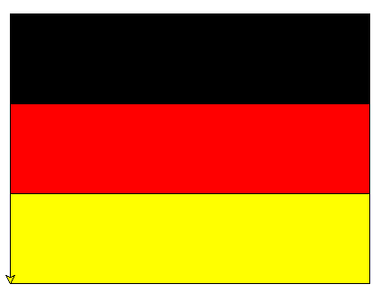

arrow_circle_up
-
Eljárás segítségével rajzoljunk egy német zászlót
(fekete-piros-sárga). A sávok legyenek 400 pixel szélesek és
100 pixel magasak.

-
Eljárás segítségével rajzoljunk egy lengyel zászlót
(piros-fehér). A sávok legyenek 400 pixel szélesek és 150
pixel magasak.
-
Eljárás segítségével rajzoljunk egy ír zászlót
(zöld-fehér-narancs). A sávok legyenek 130 pixel szélesek és
300 pixel magasak.
-
Írj programot, mely beolvassa a másodfokú egyenlet
együtthatóit, és kiírja, hogy az egyenletnek van-e
megoldása!
-
Írj programot, ami beolvassa a másodfokú egyenlet
együtthatóit, és kiírja az egyenlet megoldásait, ha vannak!